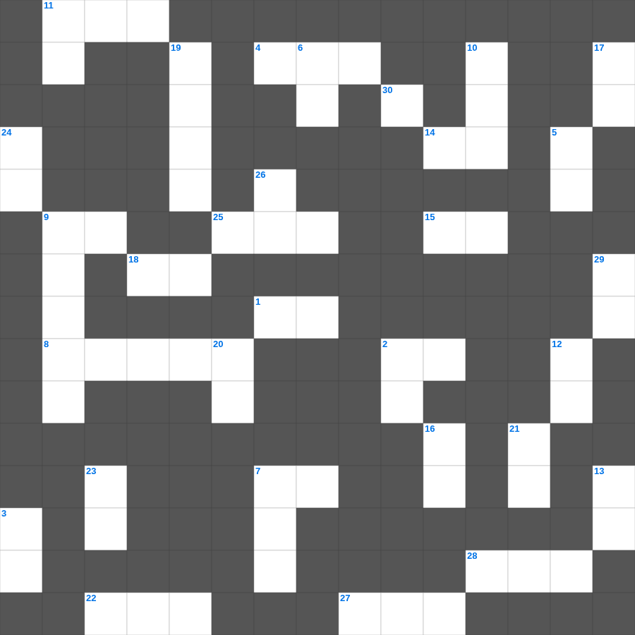

열왕기하 마스터 100
📌 서비스 정의
십자가로세로는 교회 주보와 주일학교에서 사용할 수 있는 성경 기반 가로세로 퍼즐 서비스입니다. 성경 인물, 사건, 핵심 구절을 바탕으로 제작되었습니다. 온라인 풀이 및 인쇄 기능을 제공합니다.
📖 열왕기하란?
열왕기하는 북이스라엘과 남유다 왕들의 통치와 선지자 엘리사의 사역, 그리고 두 왕국이 각각 앗수르와 바벨론에 멸망하는 과정을 기록합니다.
📚 열왕기하의 주요 사건·주제
엘리야의 승천과 엘리사의 사역 · 북이스라엘의 멸망(앗수르) · 히스기야의 개혁 · 요시야의 종교개혁 · 남유다의 멸망(바벨론 포로)
오늘은 열왕기하의 주요 내용을 담은 열왕기하 주일학교 퀴즈를 준비했습니다. 총 35개의 힌트가 있으며, 주일학교 교재나 성경공부 자료로 활용하기 좋습니다. 무료로 즐기는 열왕기하 가로세로 퍼즐을 지금 바로 풀어보세요!

📝 가로 힌트
1. 너희가 견디고 있는 모든 박해와 환난 중에서 너희 이것과 믿음으로 말미암아
2. 하나님의 각종 이것을 교회를 통하여 하늘에 있는 통치자들과 권세들에게 알게 하려 하심이니
4. 너희 안에서 착한 일을 시작하신 이가 그리스도 예수의 날까지 이것을 이루실 줄을 우리는 확신하노라
6. 아론이 입는 거룩한 옷
7. 에베소서를 전달한 두기고는 주 안에서 진실한 이것이니라
8. 계시록 7장: 인침을 받은 자의 수
9. 소돔과 고모라와 그 이웃 도시들도 그들과 같은 행동으로 음란하며 다른 이것을 따라 가다가
11. 네가 네 자신과 이것을 살펴 이 일을 계속하라 이것을 행함으로 네 자신과 네게 듣는 자를 구원하리라
14. 그들은 멸망하게 할 이것을 슬그머니 끌어들여 자기들을 사신 주를 부인하고
15. 진노 중에라도 이것을 잊지 마옵소서
18. 유다서 1장 6절: 자기 처소를 떠난 천사들을 가두신 곳
22. 두 번째로 보내어 감람나무 잎사귀를 물어온 새
25. 곡식의 첫 이삭 한 단을 드리는 날
27. 미디안과의 전쟁에서 탈취한 물건의 정결례 방식
28. 하나님이 약속하신 젖과 꿀이 흐르는 땅
30. 바울과 바나바를 신으로 오해했던 루스드라 사람들이 바울에게 던진 것
📝 세로 힌트
2. 바울이 고린도에서 복음을 전할 때 약하고 두려워하고 심히 떨었던 이유: 내 말과 전도함이 설득력 있는 이것의 말로 하지 아니하고
3. 상전들아 너희도 그들에게 이와 같이 하고 이것을 그치라 이는 그들과 너희의 상전이 하늘에 계시고
5. 평안의 매는 줄로 성령이 하나 되게 하신 것을 이것 지키라
6. 레위기 19장의 별명 '이것 법전'
7. 속죄제물의 피를 찍어 뿌리는 휘장 앞 횟수
9. 짐승의 이름이나 그 이름의 수, 지혜가 여기 있으니 그 수는 사람의 수니 이것이니라
10. 요셉의 꿈에서 절을 했던 열한 개의 이것
11. 화목제물을 삼 일째까지 남겨두면 이것이 됨
12. 하나님의 마음에 합한 자, 이스라엘 2대 왕
13. 아버지가 자기 자녀에게 하듯 너희 각 사람에게 권면하고 위로하고 이것하노니
16. 헤롯이 세례 요한의 머리를 무엇에 담아 소반에 가져왔나
17. 제사장이 백성을 위해 행하는 것
19. 유다서 1장 23절: 불에서 끌어내어 무엇하라 했나
20. 갈라디아 교인들이 바울을 영접할 때 하나님의 이것과 같이 영접하였도다
21. 슬로브핫의 딸들이 기업을 받을 때 조건 '자기 이것 지파에게만 시집갈 것'
23. 한 여자가 매우 귀한 향유 곧 순전한 나드 한 이것을 가져와 예수의 머리에 부음
24. 베드로전서의 핵심 단어 중 하나 (ㄱㄴ)
26. 성령의 열매: 충성, 온유, 이것
29. 하나님이 미리 정하신 언약을 430년 후에 생긴 이것이 폐기하지 못하느니라
🧩 이 퍼즐에서 배우는 내용
이 퍼즐은 열왕기하 마스터 100의 핵심 단어와 개념을 자연스럽게 복습할 수 있도록 구성되었습니다. 주일학교 수업이나 개인 성경공부에서 학습 내용을 점검하는 용도로 바로 활용할 수 있습니다.
🧑🏫 교회 교육 자료 활용
이 퍼즐은 주일학교 교재 추천 자료로 활용할 수 있고, 주일학교 주보에 넣기 좋은 분량으로 구성되어 있습니다. 수업용 주일학교 교안에 활동지로 붙이거나, 예배 후 복습용 주일학교 공과교재로 바로 사용할 수 있습니다.
🏷️ 키워드
열왕기하 주일학교 퀴즈, 열왕기하, 십자가로세로, 성경퀴즈, 말씀퀴즈, 가로세로퍼즐, 주일학교 교재 추천, 주일학교 주보, 주일학교 교안, 주일학교 공과교재